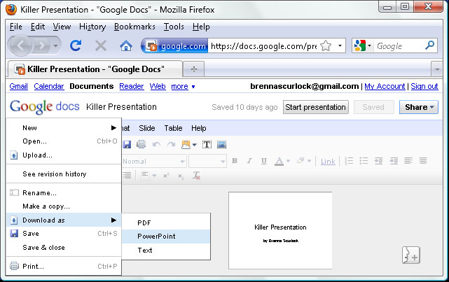
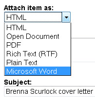
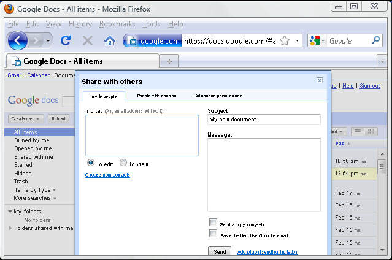
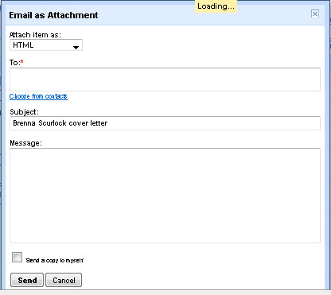
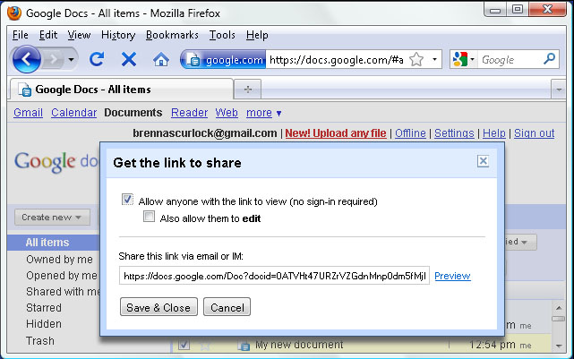

Part 4: Share your documents
Google docs has a few options for sharing your files. You can download files to your computer, email your documents as an attachment, invite others to view/edit your documents, or create a link to a specific document.

- Download
- To download a Google doc or stored file to your computer, begin by clicking on the file from your main documents page to open the file in a new window.
- If the file is a Google doc, you will need to select "File" and "Download as". Depending on the nature of the doc, you will be able to select from various file formats, such as Word, Powerpoint, Excel, plain text, or PDF. Once you select your desired file type, a pop-up box will allow you to choose whether you wish to open or save the file. Select "Save File" and choose the file destination.
- If the file is not a Google doc, you should still open the file in your browser. On the left side of the screen beneath the file name, you will see a link that says "Download". Click this link and proceed as before.
- Email
- To email a file as an attachment, first click the checkbox to the left of the desired file on the main documents page.
- Next, click the "Share" dropdown menu at the top of the documents area and select "Email as attachment..."
- Proceed as you would with an ordinary email: enter the recipient's address, add a message, and send your file on its way.
**In the pop-up window, you will see a drop down menu labeled "Attach item as:" This allows you to select the file type to send if the file is a Google doc. If you are not emailing a Google Doc, you will not have this option.
- Invitation
- To invite other gmail users to view and edit your file, first click the checkbox to the left of the desired file on the main documents page.
- Next, click the "Share" dropdown menu at the top of the documents area and select "Invite people..."
- In the pop-up window, you will need to enter the email addresses of the people you wish to send your document to. Beneath the email input area, you will see two options: "To edit" and "To view". This allows you to select whether you want the recipients to simply view the document or be able to make changes to it.
- Once you have entered a personal message (or left the area blank; it's up to you) click "Send". This will email the recipients a notification that they may view or edit your document, along with a direct link to the document.
 - Link
- To create a link to your file or document, first click the checkbox to the left of the desired file on the main documents page.
- Next, click the "Share" dropdown menu at the top of the documents area and select "Get the link to share..."
- Before you are given the link, you must select the box that says "Allow anyone with the link to view (no sign-in required)". It is up to you whether you select the next box, "Also allow them to edit." The link will appear in the field below the checkboxes. You can copy the link and pass it along however you want.

